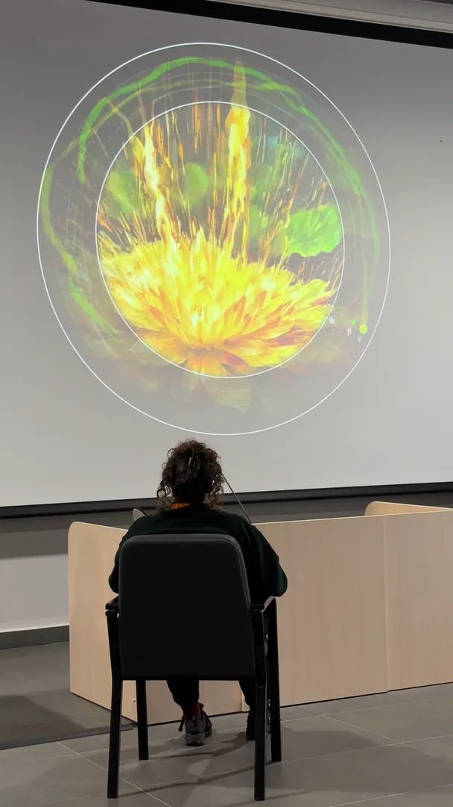
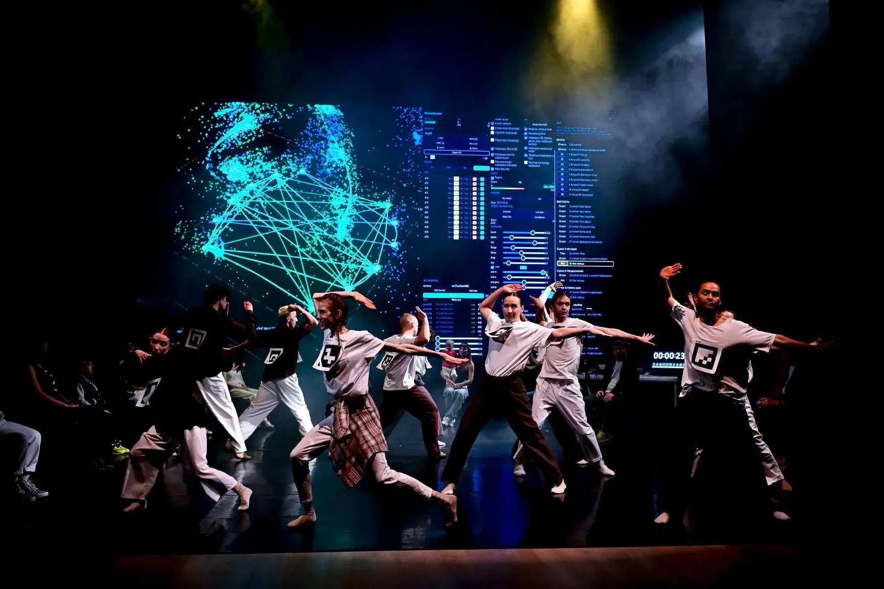
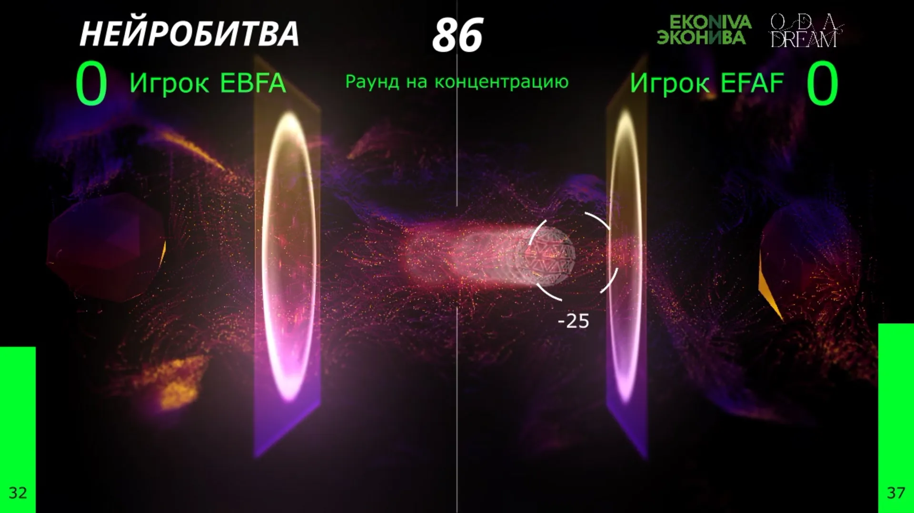
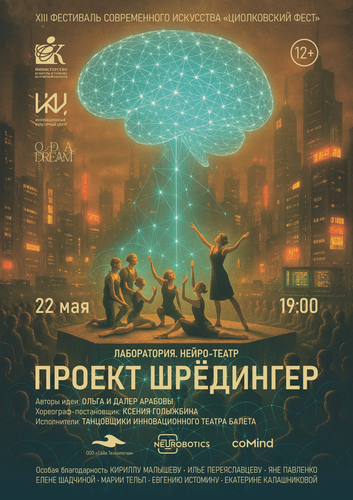
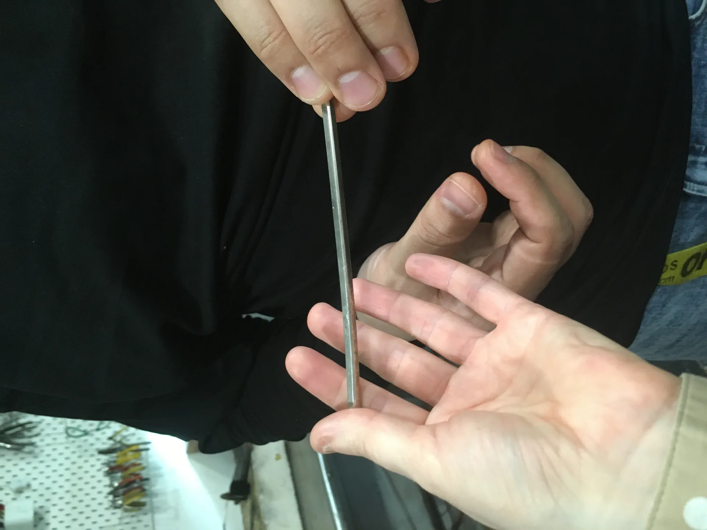

MindShow
Участник создаёт личную аудиовизуальную историю из состояния и рассказа.
Спектакли, инсталляции, игры и материальные объекты. Статус каждой работы указан отдельно: реализованное, доступное для показа и исследование не смешиваются.

Спектакль-лекция, создаваемый артистами и зрителями в пяти сценах.

Участник создаёт личную аудиовизуальную историю из состояния и рассказа.

Два человека управляют одним виртуальным объектом через изменения своего состояния.

Реализованная работа. Сейчас не входит в репертуар.

Материальный объект из художественной практики студии.
В дизайн-прототипе подробно раскрыта одна работа. Остальные записи показывают логику каталога, но пока не являются полными страницами.